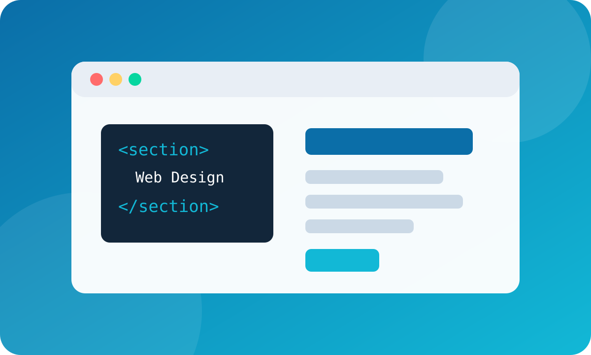

Estrutura
Uso de cabeçalho, navegação, conteúdo principal, seções e rodapé.
Esta página demonstra estrutura semântica em HTML, uso de imagem, tipografia, cores, espaçamentos, cartões, responsividade e estilos externos em CSS.
Conhecer o projeto
O layout combina conteúdo textual e elementos visuais com uma identidade consistente, aplicando boas práticas de hierarquia e contraste.
Uso de cabeçalho, navegação, conteúdo principal, seções e rodapé.
Cores, fontes, margens, sombras, bordas, botões e layout responsivo.
Banner vetorial (SVG) e ícones em PNG com fundo transparente, armazenados na pasta de imagens.
O projeto utiliza CSS externo e mantém os arquivos organizados em uma estrutura simples, fácil de abrir no navegador ou editar no VS Code.